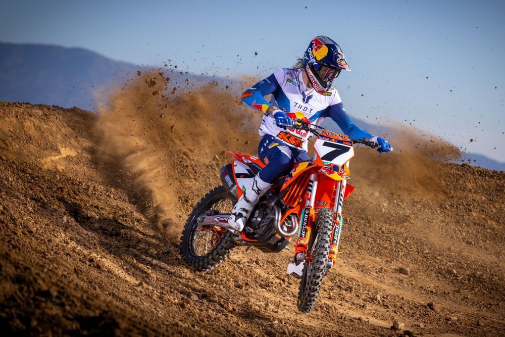
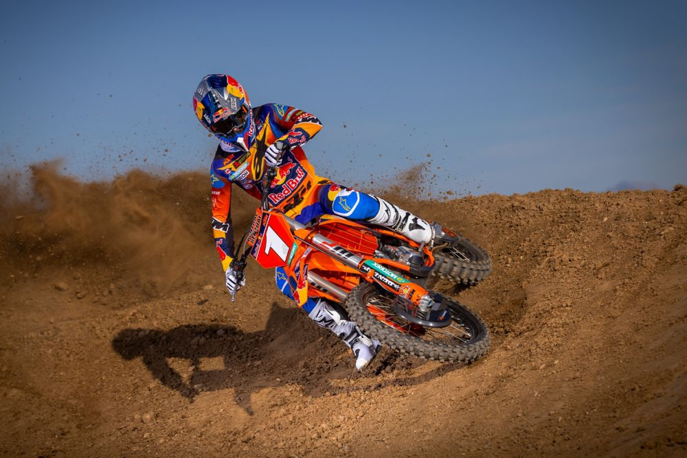
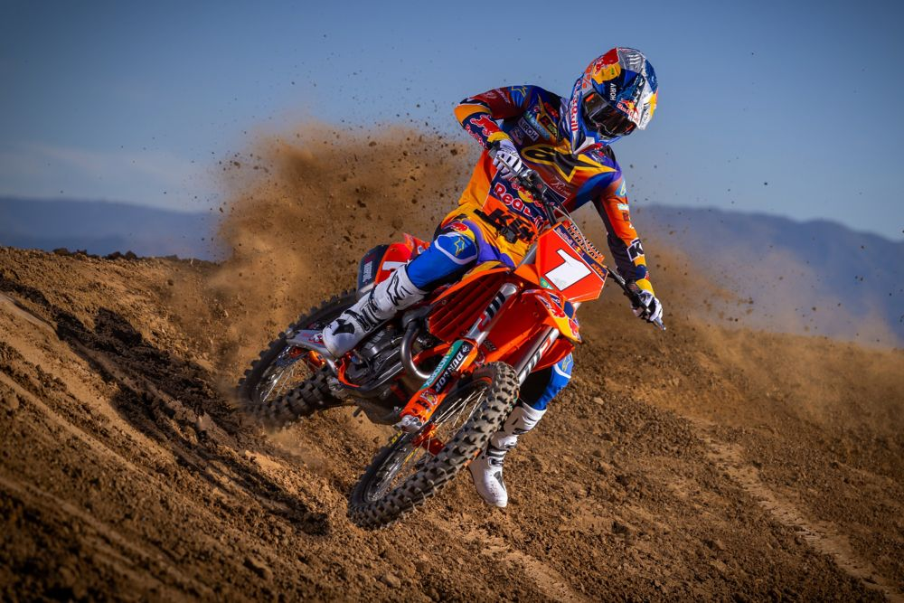
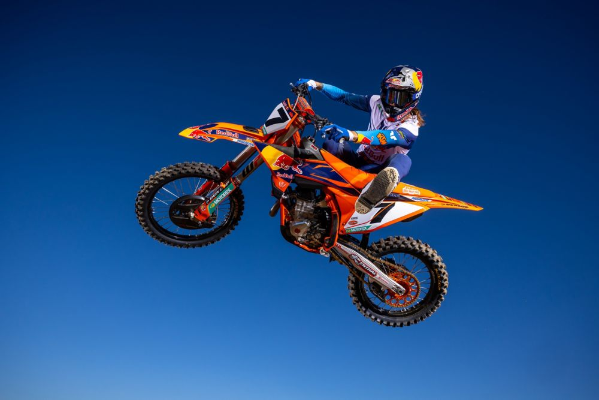
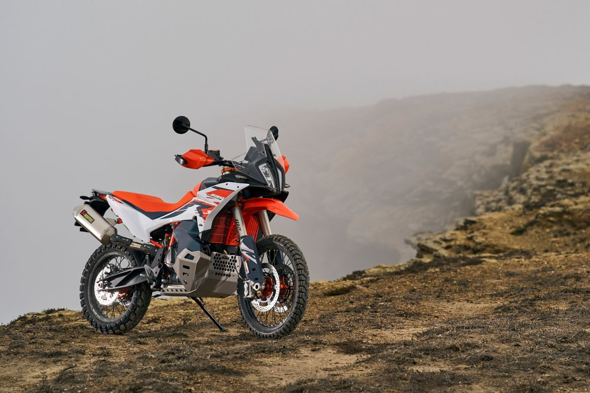
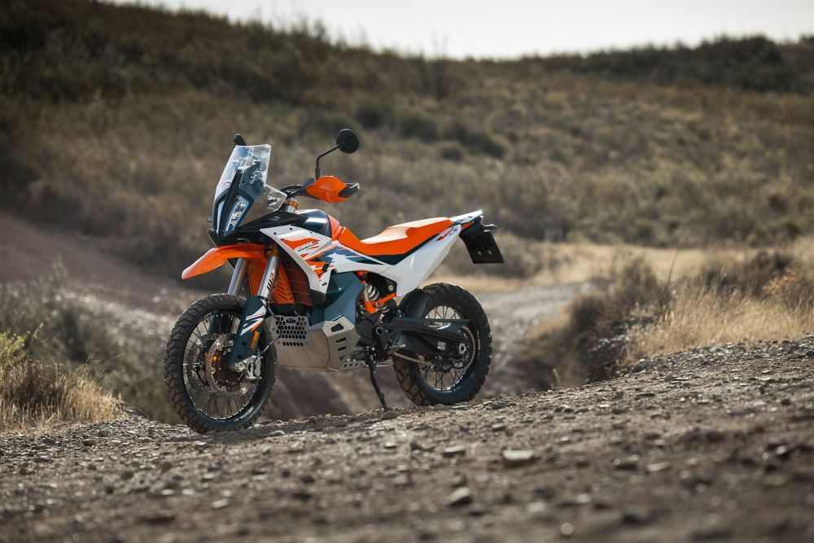

RIDE LIKE A WINNER WITH THE 2025 KTM SX-F FACTORY EDITIONS

2025 KTM 450 SX-F and KTM 250 SX-F FACTORY EDITIONS are set to roll into start gates and will soon be leaving track rivals in their roost. The latest versions of KTM’s primed READY TO RACE machinery are the only pure competition-focused high-end options for riders who want - and need - to go that extra mile and at extra pace.
In trusted KTM FACTORY EDITION style, the 2025 models boast the full Red Bull KTM Factory Racing trim in dedication to the three notable riders that will front the team and company’s push in 2025 AMA Supercross and Motocross series: Chase Sexton, Aaron Plessinger and Tom Vialle. The 2025 line-up carries the latest race look and graphics for the new season and with choices between #4 (Sexton) #7 (Plessinger) or #1 (Vialle) for the KTM 450 SX-F and KTM 250 SX-F FACTORY EDITIONs respectively. These bikes are the closest riders and fans can come to the Pros courtesy of a host of performance and practical KTM upgrades; the only separators will be the talent, fitness, and the hands on the throttles!
Both 2025 KTM FACTORY EDITIONs are based on the technical platform that has won world championships, a 250SX title, Grands Prix, Main Events and banked a host of podium trophies with a wide range of different athletes and riding styles. The 2025 creations will be the last KTM FACTORY EDITIONs of this current SX-F generation.
The KTM FACTORY EDITIONs feature light, compact and advanced SOHC single cylinder mass centralized engines. Cylinder, cylinder head, piston and crankshaft development ensure resistant, smooth, torquey, and reliable power output with longer service intervals. The motor package for both models include an Akrapovič system, fully refined EMS and a 44 mm Keihin throttle body as well as Pankl Racing 5-speed gearboxes with quickshifter.
The robot-wielded steel frames adhere to precise parameters of longitudinal and torsional flex for exceptional rider feedback, energy absorption, cornering confidence and straight-line stability for acceleration and braking.

The chassis benefits from the latest spec, fully adjustable WP XACT suspension (48 mm AER split air forks and 300 mm dual compression control tool-free rear shock with higher ground clearance for the linkage). The chassis hoists the 7.2 Liter (1.9 gallon) tank and also supports the carefully crafted rider triangle for ergonomics; permitting close control and grip of the bike in any condition and for a wide array of obstacles.
Edge the competition with other features such as tool-less air filter access and maintenance marks for rapid servicing, engine mapping (plus traction control and launch control), a Connectivity Unit Offroad (to enable swift and easy engine personalization through the KTMConnect App), larger surface area footrests, and premium components like Brembo clutch and brakes, DID wheels, Neken handlebar technology, Dunlop GeoMax MX34 tires and more.
The structure is light and orientated around the anti-squat concept for a distinctive and effective handling sensation, thanks also to the light aluminum subframe.
- Brand new race trim and colorway for the 2025 AMA Supercross & Motocross season with dedicated numbers and graphic schemes for Chase Sexton (#4), Aaron Plessinger (#7) and Tom Vialle (#1)
- Proven championship and race winning technical base for both KTM 450 SX-F and KTM 250 SX-F FACTORY EDITIONS
- Hydro-formed, laser-cut and robot-welded steel frame with varied thickness and improved anti-squat concept. Less weight, more flex and enhanced cornering feel. Light 2-piece aluminum subframe
- Fully adjustable WP XACT Suspension with split damping function, enhanced with settings to match the feel of the frame and easily changeable with integrated clickers


- Peerless components with Brembo clutch and brakes, Neken bars, Keihin throttle body, Akrapovič muffler, Dunlop tires
- Connectivity Unit Offroad for personalized settings through the possibilities and options of the KTMConnect App
- Over 20 KTM performance and aesthetic KTM PowerParts additions to convert the KTM 450 SX-F and KTM 250 SX-F motorcycle bases into 2025 KTM FACTORY EDITIONS.
The 2025 KTM SX-F FACTORY EDITIONS will be rolling off the Austrian production line in December and will be available at authorized KTM dealers from January 2025.
BACK TO TOP
TOTAL DOMINANCE-THE 2027 KTM ENDURO RANGE RETAINS ITS WINNING RECIPE
The 2027 KTM EXC and EXC-F range builds on KTM's long-standing success at the highest level of enduro competition. Developed through years of championship-winning racing, the latest lineup delivers proven performance, precise control, and rider-focused ergonomics across all terrain.
For 2027, the KTM EXC range receives a fresh Graphics update, reinforcing its distinctive READY TO RACE identity while maintaining the established technical platforms that define KTM’s position at the forefront of enduro. The range continues with KTM’s advanced chassis concept, proven WP XACT suspension, and refined engine packages across both 2-stroke and 4-stroke models—ensuring a consistent and competitive performance base for riders at every level.
In addition, the KTM enduro range offers access to KTM’s Premium Manufacturer’s Warranty, available in certain territories and subject to servicing and maintenance in line with manufacturer guidelines through authorized KTM dealers. Spanning a broad displacement range, the 2027 KTM enduro lineup caters to riders of all levels and disciplines. From lightweight 2-stroke machines such as the KTM 125 XC-W to the powerful KTM 500 EXC-F, each model is built to deliver precise handling, controllable power, and confidence in demanding offroad conditions.
Across the 2-stroke lineup, KTM’s Throttle Body Injection (TBI) system ensures consistent fueling, crisp throttle response, and smooth, controllable power delivery—from low-speed technical terrain to high-revving special tests.
On the 4-stroke side, the KTM 250 EXC-F provides an accessible entry into race-proven performance, while the KTM 350 EXC-F remains a benchmark for versatility, balancing agility with increased power. At the top of the range, the KTM 450 EXC-F and KTM 500 EXC-F deliver strong, reliable performance for demanding terrain and extended race conditions. Supported by KTM’s global dealer network, riders benefit from expert servicing, widespread parts availability, and a full range of KTM PowerParts and KTM PowerWear to customize performance, protection, and comfort.
Built on decades of racing success and continuous development, the 2027 KTM EXC range remains a reference point in enduro—combining proven performance, modern technology, and long-term reliability for riders worldwide.
BACK TO TOP
BIRTH OF THE BEAST 4.0 – ENGINEERING THE KTM 1390 SUPER DUKE R
From conception to development, get exclusive access and join us as we go behind the scenes and look at the fascinating process of bringing the all-new KTM 1390 SUPER DUKE R to life in this in-depth look at the BIRTH OF THE BEAST 4.0.
Get ready to meet the stars of the show – the passionate and dedicated engineers whose relentless pursuit of perfection turned dreams into a 1,350 cc, 190 PS reality.
Then, from the test bench to the track, there’s no substitute for a real rider’s feel, and who better than former MotoGP™ racer Jeremy McWilliams to put the developments to the test.
The ultimate result… Not only the most fearsome DUKE ever created, but the stand-out leader of the Hyper Naked category.
BACK TO TOP
THE 2026 KTM 990 RC R CUP - now open to Wild Card entries
The KTM 990 RC R CUP is a six‑round European one‑make motorcycle racing championship designed for passionate riders — not factory professionals. Officially underway, the CUP now offers a limited number of Wild Card race entries per event, giving riders the opportunity to join selected rounds of this exclusive KTM racing series. This professionally organized, cost‑controlled racing cup delivers real KTM racing to real riders, combining factory support, equal machinery, and a true championship environment.
Race on the KTM 990 RC R or KTM 990 RC R TRACK
Riders compete on one of two eligible CUP motorcycles:
Both models are engineered for competitive one‑make racing and deliver the authentic experience of lining up on a factory‑supported KTM CUP grid.
Wild Card Entry – How to Join the KTM 990 RC R CUP
Wild Card entries allow riders to participate in individual KTM 990 RC R CUP race events without committing to a full season. Wild Card Entry Requirements:
- Ownership of an eligible CUP motorcycle (KTM 990 RC R or KTM 990 RC R TRACK)
- Motorcycle purchased through an authorized KTM Dealer
- Limited availability, with approximately five Wild Card slots per race
Wild Card riders benefit from the same professional event structure, race organization, and paddock environment as full‑season entrants.
This Is Not About Fame. It’s About Passion.
The KTM 990 RC R CUP is not a talent identification program for the next MotoGP star. It is a European motorcycle racing cup for KTM enthusiasts who want to experience real racing — whether progressing from track days or chasing the next level of adrenaline. From the first practice session to the race start lights, the KTM 990 RC R CUP puts you on the grid of a true factory‑supported one‑make racing series.
Book Your KTM CUP Wild Card Entry
Wild Card entries for the KTM 990 RC R CUP are open now.
Click below to access the official booking platform and secure your Wild Card race entry for the selected event. Availability is limited and allocated per race weekend.
BACK TO TOP
THE 2025 KTM 890 ADVENTURE R KEEPS ITS SEAT AS THE KING OF MID-WEIGHT ADVENTURERS
Designed for riders seeking more, the 2025 KTM 890 ADVENTURE R is set to retain its crown in the mid-weight travel kingdom – with a new look to boot. The KTM 890 ADVENTURE R nameplate is well-known – and for good reason. Offroad excellence and next-level capability have made it the go-to machine for hardcore Adventure riders. Taking cues from the Dakar-winning KTM 450 RALLY, the WP suspension package on the 2025 KTM 890 ADVENTURE R features time-proven hardware on each end, with a WP XPLOR 48mm fork and a WP XPLOR PDS rear shock getting the job done.

Aesthetically, the KTM 890 ADVENTURE R also leans on its KTM 450 RALLY stable mate, with a low windshield, high front fender, rally-styled bodywork, and enhanced body protection. Rider comfort hasn’t been forgotten, however, with the offroad-focused single-piece seat emphasizing mobility and grip, and a revitalized graphic set for 2025 finishing the looks package.
The 2025 KTM 890 ADVENTURE R might have a new graphics package but retains its proven hardware underneath.
2025 KTM 890 ADVENTURE R – HIGHLIGHTS

- KTM 450 RALLY-inspired bodywork with new graphics
- Offroad-focused, lower windshield
- Single-piece seat
- Proven WP XPLOR suspension
- 5” TFT display with USB connection
- ABS components with a 9.3 MP modulator
- OFFROAD ABS linked with OFFROAD MODE and optional RALLY MODE
- DEMO MODE functionality
The new 2025 KTM 890 ADVENTURE R will be rolling off the Austrian production line from November and will be available at authorized KTM dealers in December.
BACK TO TOP